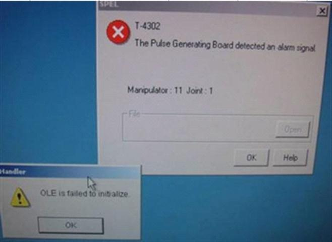

Service History
Subject: NECSM TR-60 encountered:
1) T-4302 The Pulse Generating Board detected an alarm signal for manipulator 8, 9, 10 and 11
2) DU E-Stop LED on, ERROR LED On
Handler Model: TR-60
Controller: RC520
Date: 3 May 2010
Symptom
T-4302 The Pulse Generating Board detected an alarm signal for manipulator 8, 9, 10 and 11.
DU E-Stop LED on, ERROR LED On.
|
 |
From the jam data, it seems that some crash happen this morning 6.19am on input side soak boat.
Before this crash, from 23.55pm till 6.19am, it seems something was wrong. Someone was power on/off and temperature change always. Do you know what happen during this time?
You may need to check with production what exactly happen during this timing of 23.55 to 06.19.
Can you also check on chamber soak area if there are any abnormalities? If possible, please take picture of crash if any.
T-4302, robot 8-11, problem area is all the stepper motor region from PG#2 of chamber so please check this area if any parts damaged/crash.
I think the E-Stop on the DU is ON because HIM unable to load properly. When HMI cannot load, SPEL unable to initialize, E-STOP will be ON. We need more information like jam data or SPEL error history and was it conversion or running production halfway etc..
Action
This is the second time it happened.
1st time
Main Function and Background Function in SPEL both removed.
So whenever, MMI load up, it will hang up with no response from control panel.
2nd time(this time)
Main Function disabled. Only start up function(background) in SPEL running. Purpose of background function is like a background monitoring. As main function was not loaded, it failed to initialise the handler so background monitoring detects abnormalities this time, from Robot 8-11, PG#2.
Note both functions must be selected as main function and background function respectively. Else, SPEL unable to initialise and from DU, E.STOP and ERROR red led will light up. We saw from the HMI jam data, some crash occur on input side soak buffer and before that, about 6 hours of power on/off, temperature setting change and RS232 error. This log is NOT normal.
From this, we strongly recommend 2 advises:
1) Back up regularly. Best is image of harddisk.
-This time was just functions disabled, if someone delete POSE or delete some function, this is very bad situation.
2) Consider SPEL password lock.
-What if someone execute wrong command and crash badly?
-Hardware damage, this will be very bad.
-HMI offers Engineer and Supervisor password lock. You can also SPEL password lock if you are unable to control technician.
Cause
Main Function was disabled in SPEL CT.
Remarks
At a moment, we allow technician to access the SPEL for checking the vacuum level for Index Arm. This will be done during package conversion.
Reason for vacuum level check --> Too many Device Stuck error OR Device Pick-up error on Soak boat especially during running Low Temp.
This problem already highlighted few time to EPSON for further improvement or countermeasure. But so far, no solution from them about this problem.
Therefore, the only way to minimise this problem is by confirming the vacuum level for each DUT. This action require technician to access SPEL.
If you have some idea on how technician can confirm this vacuum level without accessing to SPEL, please let me know.
PG #1(Hand A and B up/down for Input & Output Hands)
PG #2(For Soak Robot 8, 9, 10 & 11)
KA1 : For robot 10 (Input-side Soak Buffer; moving top-middle-bottom)
KA2 : For Robot 11 (Chamber Soak Buffer Up/Down)
KA3 : For Robot 8 (Upper Soak Boat Transportation; top->moving from test to in buffer)
KA4 : For Robot 9 (Lower Soak Boat Transportation; bottom->moving from in buffer to bottom test)